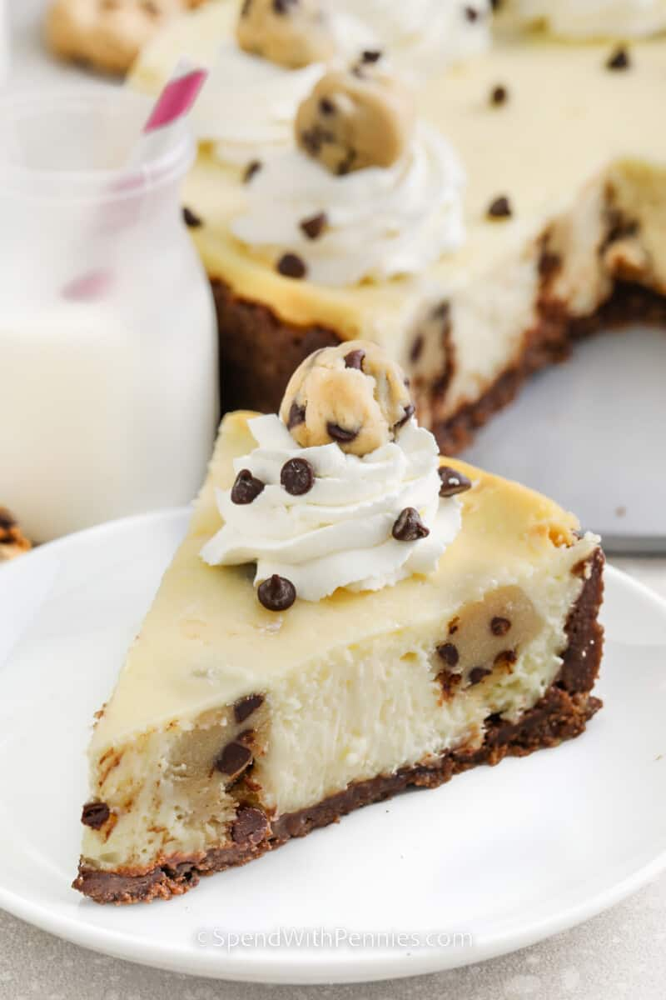

Cookie Dough Cheesecake

Creamy cheesecake batter is filled with chocolate chip cookie dough balls in a crunchy cookie crumb crust. Irresistibly decadent.This recipe can be made 5 days in advance, and it freezes beautifully for up to 4 months!
Ingredients
Cookie Dough
- ¼ cup salted butter softened
- ¼ cup brown sugar
- 1 tablespoon milk or cream
- 1 teaspoon vanilla extract
- ¾ cup all purpose flour *heat treated
- ½ cup mini chocolate chips
Crust
- 24 crisp chocolate chip cookies
- ⅓ cup melted butter
- ¼ cup sugar
Cheesecake
- 24 ounces cream cheese softened
- 1 cup sugar
- 1 teaspoon vanilla
- 3 eggs
- 1 tablespoon flour
Steps
Cookie Dough
- Beat butter with a hand mixer until fluffy. Add brown sugar and continue beating until combined. Mix in milk and vanilla.
- Add flour a little bit at a time until incorporated. Fold in chocolate chips. Scoop into heaping teaspoon-sized balls and place onto a parchment-lined sheet pan. Refrigerate.
Cookie Crust
- Pulse the cookies in a food processor to create crumbs.
- Combine all crust ingredients in a bowl and mix well. Press into a 9" springform pan on the bottom and sides. Refrigerate.
Cheesecake
- Preheat the oven to 350°F.
- Beat cream cheese, sugar and vanilla until fluffy.
- Add eggs one at a time, beating until just until incorporated (do not overbeat, this will cause cracks).
- Toss 1 cup of the cookie dough balls in 1 tablespoon of flour (set aside the remainder of the cookie dough for decorating). Shake off the excess flour and fold the cookie dough into the cheesecake batter.
- Pour cheesecake into the prepared crust.
- Bake for 45-50 minutes or until the center is just set.
- Turn the oven off, open the door slightly and allow the cheesecake to cool in the oven for 1 hour. Gently run a knife around the edge of the crust to loosen.
- Remove springform pan and cool completely in the fridge at least 4 hours or overnight.
- Top with the reserved cookie dough and garnish with whipped cream if desired.